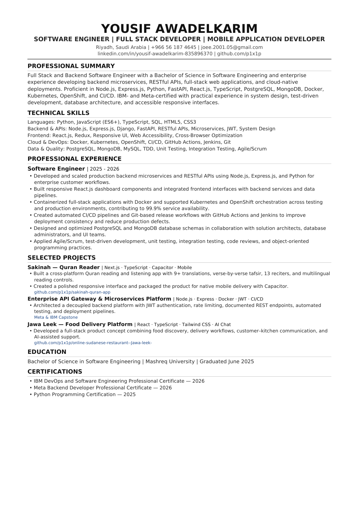

01
Backend &
Microservices
Production-grade services, RESTful APIs, authentication, database architecture, and distributed systems engineered for reliability.
I engineer high-availability backend services, full-stack products, and cloud infrastructure that turn complex requirements into reliable software.
I’m Yousif Awadelkarim, a Software Engineering graduate with hands-on enterprise experience building production systems at telecommunications scale.
My work spans backend microservices, REST APIs, React interfaces, database architecture, and containerized delivery. I care about reliability, clear system design, and software that performs under real-world demand.
const engineer = {
name: "Yousif Awadelkarim",
focus: [
"Backend microservices",
"Distributed systems",
"Cloud infrastructure"
],
uptime: "99.9%",
certified: true
};From first architecture sketch to production-ready interface, I build with the whole product in mind.
Production-grade services, RESTful APIs, authentication, database architecture, and distributed systems engineered for reliability.
Responsive, accessible interfaces connected to practical application logic, high-performance data flows, and real user needs.
Containerized deployments, orchestration, test-driven delivery, and automated pipelines designed to ship with confidence.
Production engineering experience backed by a Software Engineering degree and industry credentials from IBM and Meta.
Download full CV ↓PROFESSIONAL EXPERIENCE
EDUCATION
PROFESSIONAL CERTIFICATIONS
MY PROFESSIONAL RECORD
View my ATS-ready software engineering CV directly on this page—including enterprise experience, technical skills, education, certifications, and selected projects.

A selection of public projects spanning mobile products, full-stack engineering, AI, and practical problem-solving.
A peaceful Quran reading application featuring more than nine translations, verse-by-verse tafsir, thirteen reciters, reading tools, and a native mobile experience.
A Sudanese food-delivery platform bringing traditional dishes, delivery workflows, customer–kitchen communication, and an AI support experience into one product.
Good software starts before the first line of code. I shape the problem, design the system, ship a working product, then make it better.
yousif@studio: ~/build
LIVE$ initialize product
✓ problem understood
✓ architecture mapped
✓ interface system ready
$ ship --quality production
Understand the user, the goal, and what success needs to look like.
Turn requirements into a clear technical and interaction model.
Develop, test, refine, and keep every layer aligned.
Learn from real use and evolve the product with intent.
HAVE A PRODUCT IN MIND?